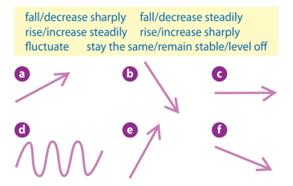

1. Match the phrases in the box with the graphs (a-f).

a
b
c
d
e
f
Task 2
Rewrite the sentences without changing their meaning.
Examples:
The number of young people working on farms has decreased sharply over the past years. *There has been a sharp decrease in the number of young people working on farms.
The number of urban inhabitants rose by 15% from 1990 to 1995. * There was a rise of 15% in the number of urban inhabitants from 1990 to 1995.
1. The migration of young people to big cities has risen dramatically.
There
2. Due to shortages of jobs, there has been a decrease in the population in rural areas in the last 10 years.
Due to shortages of jobs, the population
3. The urbanisation rate in Indonesia increased by over 30% from 1969 to 2009.
There
4. There was a sharp rise in the rate of urbanisation in South Korea during the period between 1969 and 1989.
The rate of urbanisation
5. The urbanisation rate in this city decreased slightly during the economic crisis in 2008.
There was
Task 3
The line graph below shows the urbanisation rate in South Korea and Indonesia. Write a description (of about 150 words) of the trends in the graph. Submit your answer into the link below, then see what your friends have written.